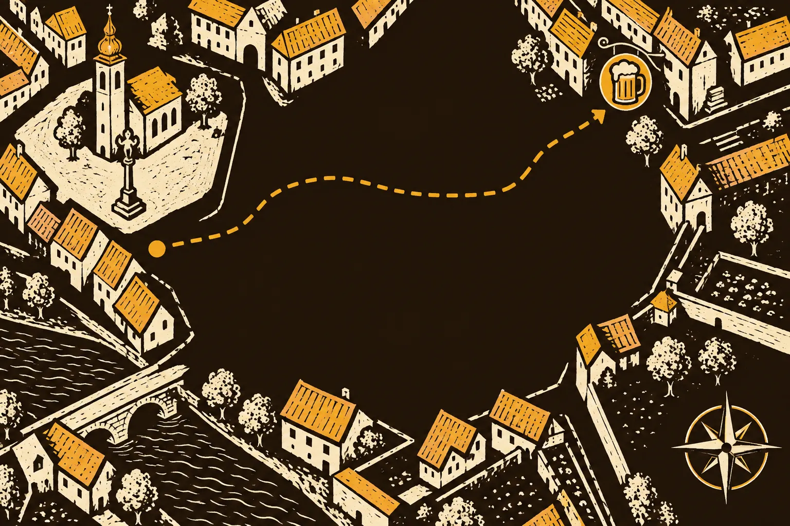
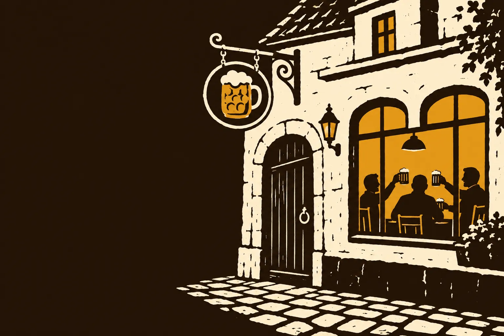
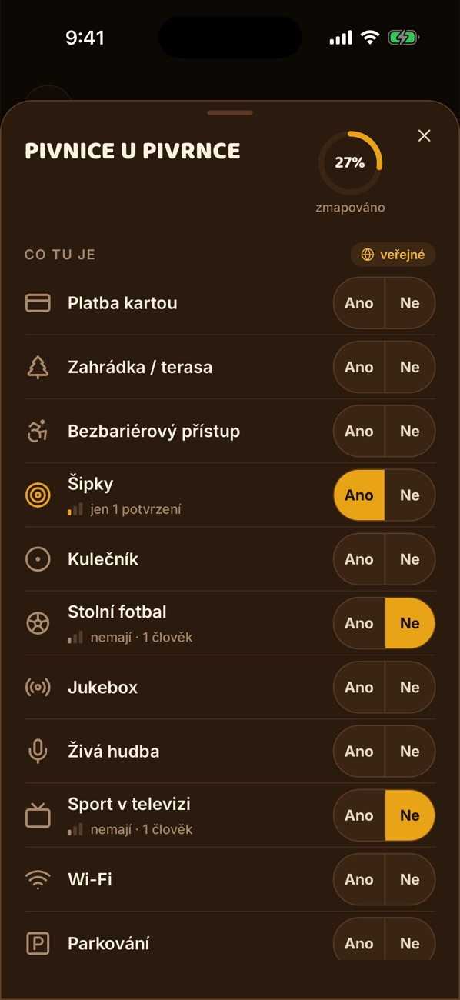
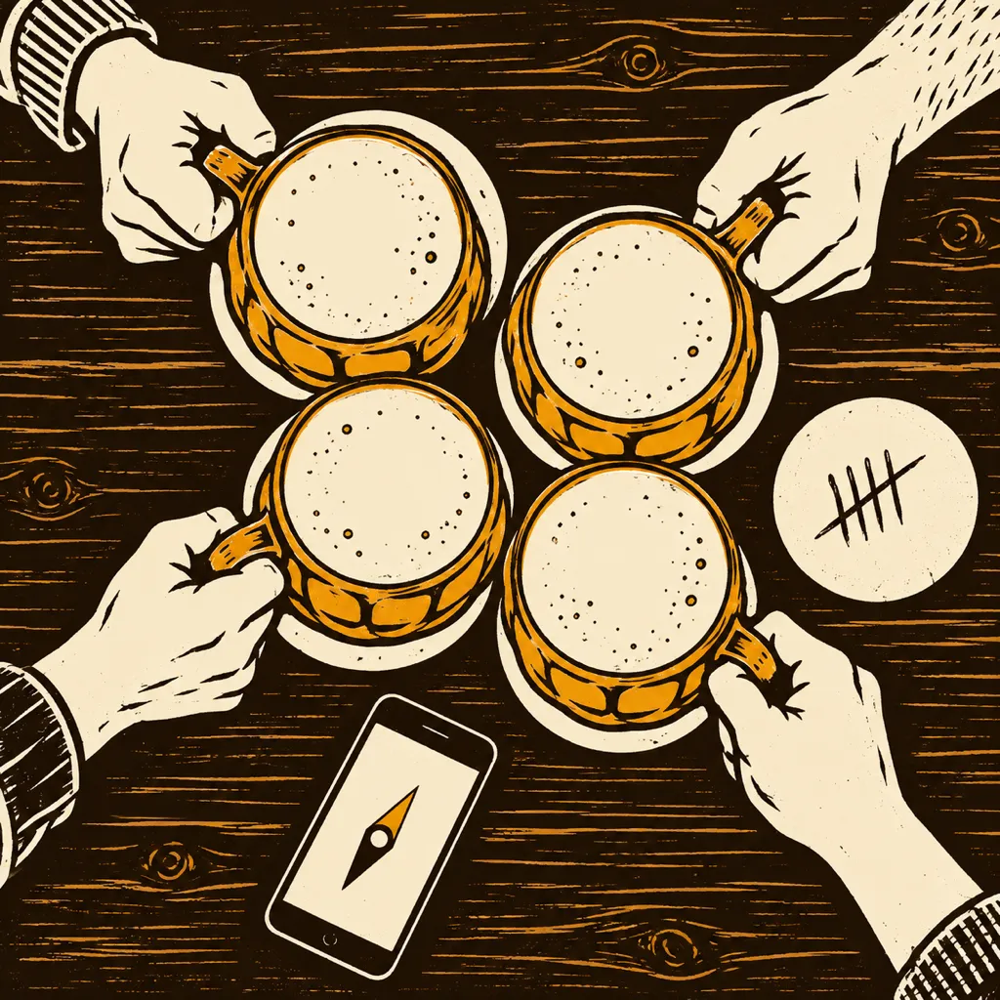

Ráno víš, kolik to stálo
Piva, ceny, hospoda i poznámky zůstanou v deníku. A napíšeš si, jestli se tam vrátíš.
Každé pivo je jedno ťuknutí. Počítadlo hlídá počet i útratu, zapíše se i bez signálu a ráno z něj máš deník celého večera.

Šipka ukáže nejbližší hospodu, jak je daleko a co tam čepujou. Nesedí ti? Ťukni na Dej mi jinou.

Jdeš na pivo? Cinkni a parta to hned ví. Kámoši kývnou, jestli dorazí.
Piva, ceny, hospoda i poznámky zůstanou v deníku. A napíšeš si, jestli se tam vrátíš.

Šipky, kulečník, zahrádka nebo sport v telce. Co zapíšeš ty, uvidí další, kdo hledá, kam zapadnout.
Co tě Na pivo stojí
Díky a přijď zas. Tomáš
